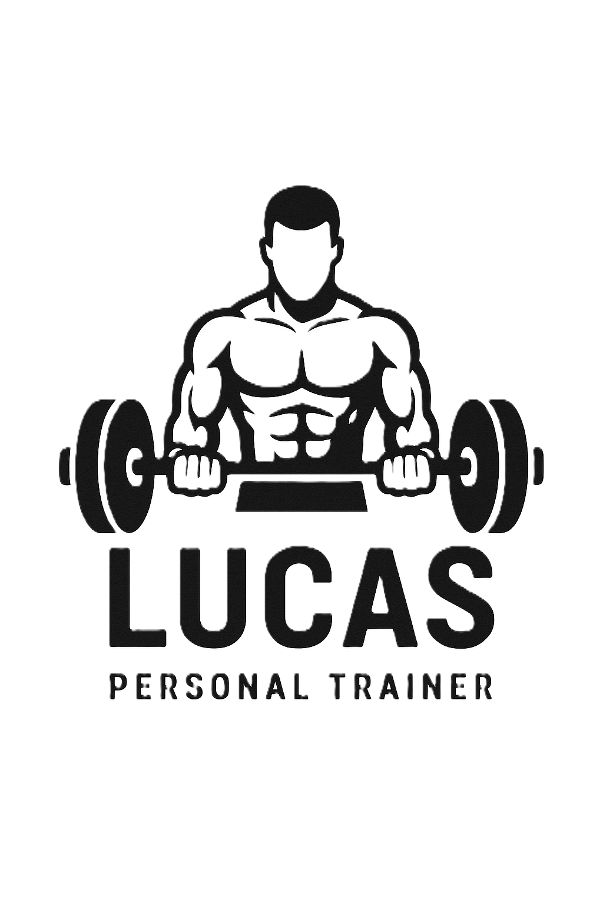

Lukas Capetinga
Arquitetura Corporal · CREF Ativo · Leitura corporal
Saída de dados
Sua leitura corporal
Percentual de gordura corporal
—
—%
—
5%AtléticoFitnessAceitável45%
IMC
—
—
Metabolismo basal (TMB)
— kcal/dia
Energia em repouso
Gasto calórico total (GCT)
— kcal/dia
Manutenção do peso
Massa magra
—
Músculo, osso, órgãos
Massa gorda
—
Gordura corporal
Relação cintura/quadril
—
—
Metas calóricas · macros diários
Calorias e macros por objetivo
// Emagrecer
Definição
—kcal / dia
- Proteína —
- Carboidrato —
- Gordura —
// Manter
Manutenção
—kcal / dia
- Proteína —
- Carboidrato —
- Gordura —
// Ganhar massa
Hipertrofia
—kcal / dia
- Proteína —
- Carboidrato —
- Gordura —
Faixa de peso saudável
—
Referência pelo IMC (18,5 a 24,9).
Proteína diária recomendada
—
1,8 a 2,2 g por kg de peso.
Hidratação diária
—
Cerca de 35 ml por kg de peso.
Faixa de gordura ideal
—
Referência estética/saúde para o seu sexo.
Importante: os valores são estimativas baseadas em fórmulas científicas (U.S. Navy, Mifflin-St Jeor) e servem como ponto de partida — não substituem avaliação física presencial, exame de bioimpedância ou orientação médica/nutricional individualizada.
Próximo passo
Transforme esses números em um projeto
Estes dados são o começo. Na consultoria, cada variável vira parâmetro de um protocolo individual, auditado e recalibrado a cada ciclo.